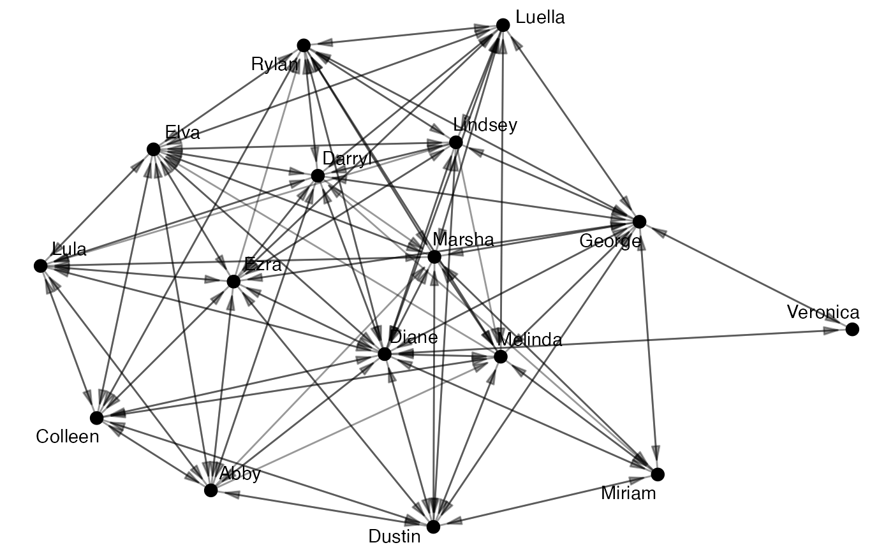
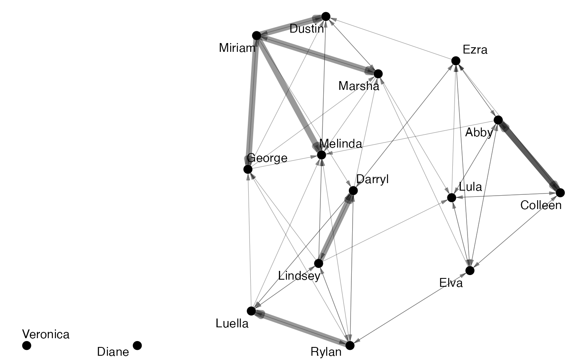
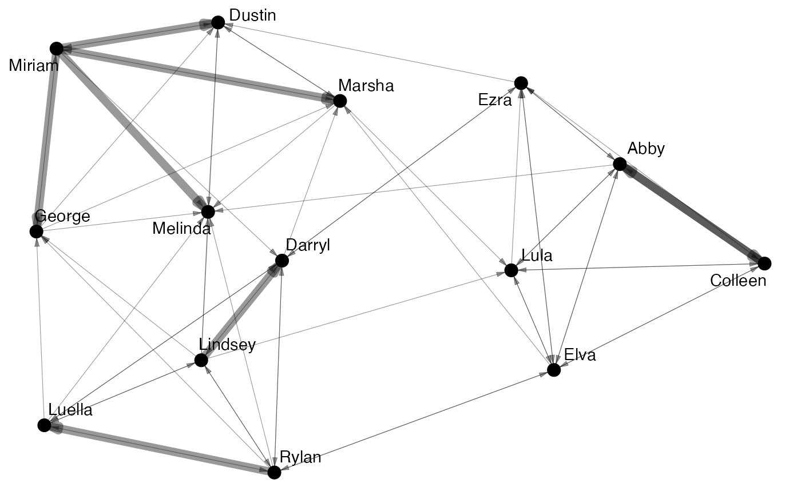
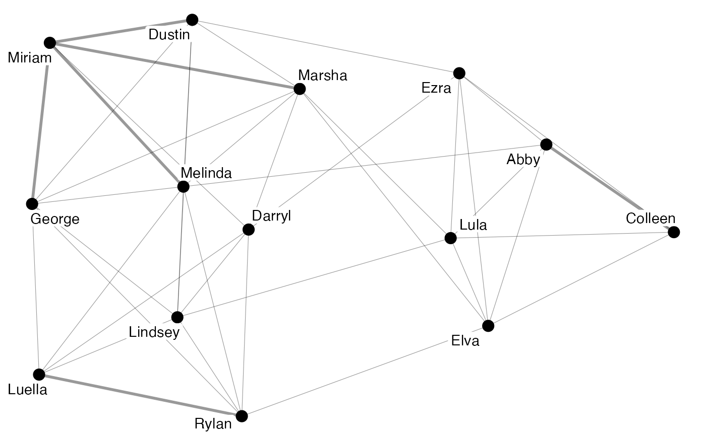
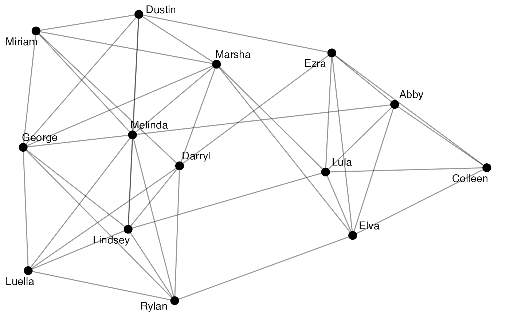

These functions offer tools for reformatting migraph-consistent objects
(matrices, igraph, tidygraph, or network objects).
Unlike the as_*() group of functions,
these functions always return the same object type as they are given,
only transforming these objects' properties.
to_uniplex(object, edge)
to_undirected(object)
to_redirected(object)
to_unweighted(object, threshold = 1)
to_unsigned(object, keep = c("positive", "negative"))
to_unnamed(object)
to_named(object, names = NULL)
to_simplex(object)
to_onemode(object)
to_multilevel(object)
to_twomode(object, mark)An object of a migraph-consistent class:
matrix (adjacency or incidence) from {base} R
edgelist, a data frame from {base} R or tibble from {tibble}
igraph, from the {igraph} package
network, from the {network} package
tbl_graph, from the {tidygraph} package
Character string naming an edge attribute to retain from a graph.
For a matrix, the threshold to binarise/dichotomise at.
In the case of a signed network, whether to retain the "positive" or "negative" ties.
Character vector of the node names. NULL by default.
A logical vector marking two types or modes. By default "type".
All to_ functions return an object of the same class as that provided.
So passing it an igraph object will return an igraph object
and passing it a network object will return a network object,
with certain modifications as outlined for each function.
Since some modifications are easier to implement for some objects than others, here are the currently implemented modifications:
| to_ | edgelists | matrices | igraph | tidygraph | network |
| unweighted | X | X | X | X | X |
| undirected | X | X | X | X | |
| redirected | X | X | X | X | |
| unsigned | X | X | X | X | |
| uniplex | X | X | |||
| unnamed | X | X | X | X | X |
| named | X | X | X | X | X |
| simplex | X | X | X | ||
| onemode | X | X | |||
| multilevel | X | X | X |
to_uniplex(): Returns an object that includes only a single type of tie
to_undirected(): Returns an object that has any edge direction removed,
so that any pair of nodes with at least one directed edge will be
connected by an undirected edge in the new network.
This is equivalent to the "collapse" mode in {igraph}.
to_redirected(): Returns an object that has any edge direction transposed,
or flipped, so that senders become receivers and receivers become senders.
This essentially has no effect on undirected networks or reciprocated ties.
to_unweighted(): Returns an object that has all edge weights removed
to_unsigned(): Returns a network with either just the "positive" ties
or just the "negative" ties
to_unnamed(): Returns an object with all vertex names removed
to_named(): Returns an object that has random vertex names added
to_simplex(): Returns an object that has all loops or self-ties removed
to_onemode(): Returns an object that has any type/mode attributes removed,
but otherwise includes all the same nodes and ties.
Note that this is not the same as to_mode1() or to_mode2(),
which return only some of the nodes and new ties established by coincidence.
to_multilevel(): Returns a network that is not divided into two mode types
but embeds two or more modes into a multimodal network structure.
to_twomode(): Returns a network that divides the nodes into two mode types.
autographr(ison_algebra)

a <- to_uniplex(ison_algebra, "friends")
autographr(a)

a <- to_giant(a)
autographr(a)

a <- to_undirected(a)
autographr(a)

a <- to_unweighted(a)
autographr(a)
